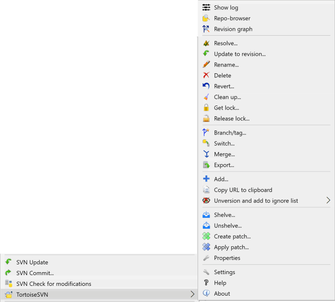
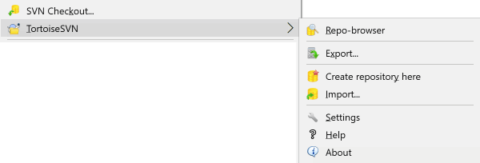

1认识你的两个图形工具
Windows 上做 SVN，标准组合是两个软件： TortoiseSVN（你每天用的客户端，集成在资源管理器右键菜单里） + VisualSVN Server（装在服务器上，用图形界面管仓库和权限）。 这一节先把这两个工具认全，后面所有操作都在这两个界面里完成，不需要敲任何命令。
TortoiseSVN：藏在右键菜单里的客户端
TortoiseSVN 最大的特点是没有独立的主窗口。 装完之后，它的所有功能都出现在 Windows 资源管理器的右键菜单里， 以及每个文件图标左下角的小角标上。
◈TortoiseSVN 在资源管理器里的样子Explorer Integration

这是已经检出到本地的项目文件夹的样子。注意每个文件左下角的小角标——
绿色对勾表示这个文件与服务器一致、没有本地修改；
红色叹号表示本地改过、还没提交；
黄色小锁表示这个文件被锁定了；
蓝色加号表示这是个新增的、等待提交的文件。
光看图标颜色，你就知道项目当前的状态，不用打开任何窗口。
图标角标速查
| 角标 | 名称 | 含义与你会遇到的场景 |
|---|---|---|
| 绿色对勾 | Normal | 文件与服务器上的版本完全一致。不需要做任何操作。 |
| 红色叹号 | Modified | 你改过这个文件，但还没提交。这是最常见的状态，说明你有活儿没提交 |
| 黄色小锁 | Locked | 文件被加了独占锁（比如美术的 PSD 源文件）。别人改不了，你也得先解锁才能提交 |
| 蓝色加号 | Added | 新增的文件，已经登记但还没提交。提交后就会变成绿色对勾 |
| 灰色问号 | Unversioned | 文件在项目文件夹里，但 SVN 完全不认识它，提交时会被跳过 |
| 红色叉号 | Deleted | 已标记删除，提交后服务器上也会删掉 |
| 红色叹号 （黄底） |
Conflicted | 冲突。你和同事改了同一处，必须人工解决才能提交 |
| 无角标 | — | 通常表示该文件被忽略（如编译产物），或者是空文件夹 |
看不到图标角标怎么办
- 重启资源管理器——装机后第一次最好重启一次，角标才会生效。
- 图标角标数量超限——Windows 最多只显示前 15 个角标程序。如果你装了网盘、OneDrive 等，它们会抢占名额。解决：在注册表
HKLM\SOFTWARE\Microsoft\Windows\CurrentVersion\Explorer\ShellIconOverlayIdentifiers里，给 TortoiseSVN 的项名前加空格让它们排到前面。 - 项目还没检出——角标只在「已经是 SVN 工作副本」的文件夹里才出现。刚建的空文件夹是不会有的。
右键菜单：两个位置，别找错
TortoiseSVN 会把菜单项放在两个地方，这是新手最容易困惑的点：
常用的几个命令会直接出现在右键菜单顶层（并且前面带 SVN 字样），
其余全部收在 TortoiseSVN → 子菜单里。
◈在已版本控制的文件夹上右键Context Menu

顶层三个带 SVN 前缀的选项（SVN Update / SVN Commit... / SVN Check for modifications）
是最常用的操作，所以被提到了顶层，方便你少点一次。
下面蓝色的 TortoiseSVN 是一个子菜单，鼠标移上去展开，里面是全部功能： Show log（看历史）、Repo-browser（浏览服务器）、Revision graph（分支图）、 Update to revision（更新到指定版本）、Rename、Delete、Revert、Clean up、 Get lock、Branch/tag、Switch、Merge、Export、Relocate、Add、Create patch、Properties 等。
图标含义：每一项左边都有小图标——比如 Show log 是文档图标、Revert 是回旋箭头、 Delete 是红叉。记住图标比记文字更快。
下面蓝色的 TortoiseSVN 是一个子菜单，鼠标移上去展开，里面是全部功能： Show log（看历史）、Repo-browser（浏览服务器）、Revision graph（分支图）、 Update to revision（更新到指定版本）、Rename、Delete、Revert、Clean up、 Get lock、Branch/tag、Switch、Merge、Export、Relocate、Add、Create patch、Properties 等。
图标含义：每一项左边都有小图标——比如 Show log 是文档图标、Revert 是回旋箭头、 Delete 是红叉。记住图标比记文字更快。
◈在未版本控制的普通文件夹上右键Unversioned Folder

普通文件夹（还没检出、也不是工作副本）的菜单短得多，只有：
SVN Checkout...（检出到此目录）、
TortoiseSVN → Repo-browser（直接浏览服务器，不用检出）、
Import...（把当前目录整个传上去）、
Settings（全局设置）。
如果你发现右键菜单里找不到 Commit，多半就是因为这个文件夹还不是工作副本—— 先做 Checkout。
如果你发现右键菜单里找不到 Commit，多半就是因为这个文件夹还不是工作副本—— 先做 Checkout。
VisualSVN Server：服务器端的管理器
服务器那边（也就是你们团队共享的那台机器）用 VisualSVN Server 来管。 它提供一个图形化的管理器（MMC 管理单元）， 创建仓库、加用户、配权限、做备份，全都是点鼠标。
◈VisualSVN Server Manager 主界面Server Manager

左边是树形结构：Repositories（所有仓库）、Users（用户账号）、
Groups（用户组）、Jobs（定时任务，比如自动备份）。
右边显示当前选中项的详情，可以查看每个仓库的地址、提交次数、大小。
看到那个 https:// 开头的地址了吗？ 这就是你要发给同事的仓库地址——他们用这个地址在你的 TortoiseSVN 里做 Checkout， 就能把代码拉到本地。
看到那个 https:// 开头的地址了吗？ 这就是你要发给同事的仓库地址——他们用这个地址在你的 TortoiseSVN 里做 Checkout， 就能把代码拉到本地。
客户端的仓库地址从哪来
流程是这样的，两端配合：
- 你在服务器的 VisualSVN Server Manager 上创建一个仓库，比如叫
MyProject。 - 管理器自动给它生成一个地址，形如
https://服务器名/svn/MyProject。 - 你把这个地址发给团队每个人。
- 每个人在本机用 TortoiseSVN → Checkout，把这个地址填进去，代码就拉到自己电脑上了。
之后就各干各的：改文件 → 提交；拉别人的改动 → 更新。再也不用互相拷文件、发压缩包。
两个工具的界面全貌
客户端 · TortoiseSVN（每人装）
- 入口：资源管理器右键菜单
- 角标：文件图标上的状态提示
- 常用：Checkout、Update、Commit、Show log
- 特点：无主窗口，全在右键和对话框里
- 附带：TortoiseMerge（比对合并工具）
服务端 · VisualSVN Server（装一台）
- 入口：VisualSVN Server Manager（MMC）
- 管仓库：新建、删除、重命名、迁移
- 管权限：建用户、建组、按文件夹授权
- 管运维：备份、定时任务、日志查看
- 附带：Web 界面，浏览器里也能浏览代码
这份教程怎么用
后续每一节都是同样的写法：先给一张真实界面截图，再说清每一步点哪里。 遇到菜单路径，我用这种样式标出来：TortoiseSVN → Commit...， 意思就是「右键 → 展开 TortoiseSVN 子菜单 → 点击 Commit...」。
所有截图点击可放大，看不清的按钮放大看就行。